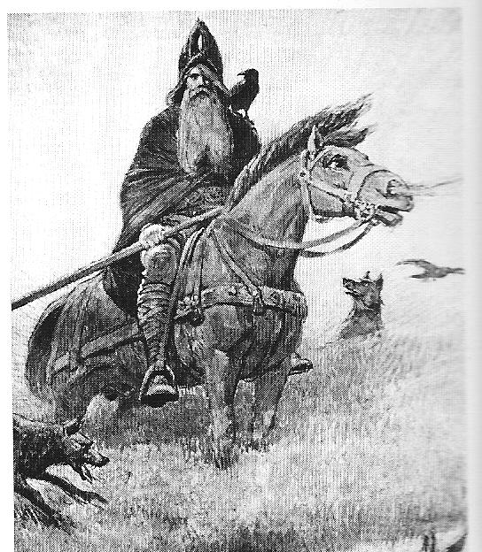

wodan
A simpler god, less bells, more whistles and two wolves and ravens named Geri, Freki, Hugin and Munin.
Awesome.
DSL
# let wodan watch
Wodan.watch do |wodan|
# a task
wodan.task :mysql do |task|
task.pid_file "/var/run/mysqld/mysqld.pid"
task.log_file "/var/log/mysql.log"
task.start "service mysql start"
task.stop "service mysql stop"
task.restart "service mysql restart"
task.limits {
:memory => 100 # megabytes
:cpu => 75 # percent
}
task.notify "dba@mydomain.com" # notify of events
end
# and another task
wodan.task :rails_app do |task|
task.dir "/home/rails/app"
task.daemonize "bundle exec rails server" # wrap and daemonize this cmd
task.notify "development@mydomain.com"
end
# tell wodan how to deal with the tasks
wodan.keep_alive(:mysql, :rails_app)
wodan.start(:some_other) # just start at wodan start and forget
wodan.notify('hostmaster@mydomain.com') # notify of all events
end
Justification
Either I am to stupid for God, or God has failed in it's intents and purposes.
Everytime I try to setup a functional install of God, it just fails to work for me.
All I ever wanted is a process monitor that:
- makes sure processes run
- keeps those processes within bounds
- notifies me (or a bunch of people) of significant events (start, stop, restart)
State
Wodan is not in a production-ready state. In fact, at the moment of writing this, all I have is the DSL to which I need to write tests and code.
WTF is Wodan
Wodan is the Germanic/Anglo-saxon counterpart of the (well) known Norge god Odin.
